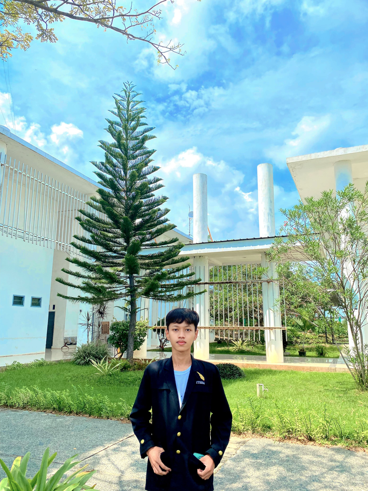

BIODATA

Khorian Mukhsin
123140006
No WhatsApp : 085664393119
Tentang Saya
Saya adalah seorang lulusan SMK dengan jurusan Teknik Komputer dan Jaringan yang saat ini sedang menempuh pendidikan di Institut Teknologi Sumatera, program studi Teknik Informatika. Memiliki pribadi yang ambisius dan memiliki semangat tinggi dalam mengejar tujuan akademis maupun pribadi. Berbekal latar belakang kejuruan,saya memiliki keahlian teknis yang kuat, terutama dalam bidang jaringan komputer. Tidak hanya itu, saya juga selalu bersemangat mencoba hal-hal baru, terutama yang berkaitan dengan teknologi dan inovasi, sehingga mampu memperluas pengetahuannya secara praktis dan teoretis. Sikap kreatif yang dimiliki membuat saya mampu berpikir kreatif dan menghasilkan solusi yang unik. Selain itu, saya terus berusaha mengembangkan kemampuan dan siap menghadapi tantangan di dunia teknologi yang terus berkembang.